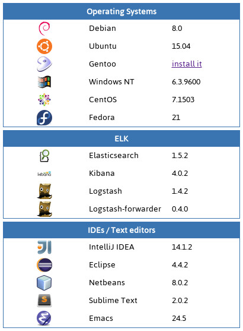
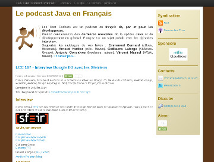
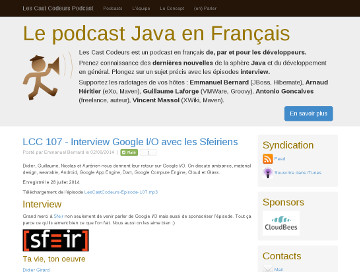
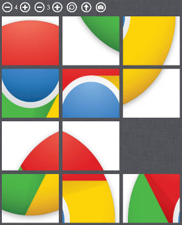
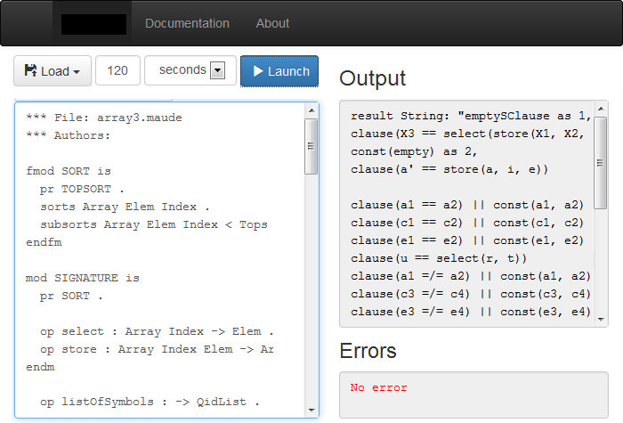
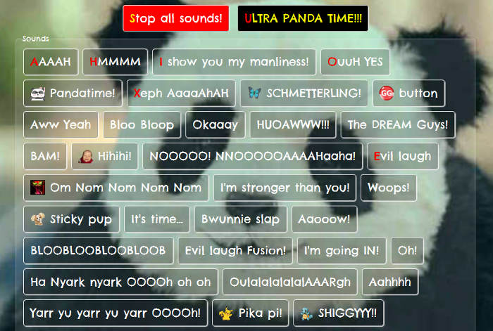
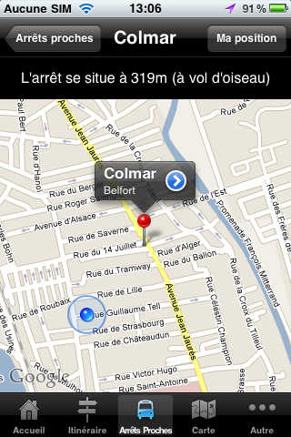
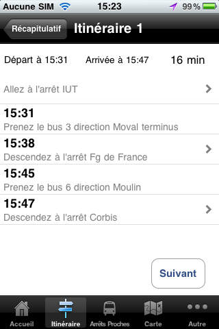

Projects
Versions-watch is a Java webapp that I'm currently developping to keep track of the versions of softwares
and frameworks that I use.

This application uses Spark, JUnit, Java 8 and jQuery. It is automatically built by Travis CI and deployed on
Heroku. Since it runs on only 1 web dyno and therefore gets unloaded periodically, it might takes some time to
load (simply wait for the dyno to wake up!).
"Les Cast Codeurs" is a french Java podcast hosted by Emmanuel Bernard, Arnaud Héritier, Guillaume
Laforge, Antonio Goncalves and Vincent Massol. It is primarly focused on the Java ecosystem but
also deals with various other topics. It is my favourite podcast and I heavily recommend it
to anyone interested in Java.

As a way to thank them for doing this podcast, I suggested to improve their website
(lescastcodeurs.com). Its source code is
hosted on Github.
This website is generated using Awestruct, and consists in
blog posts (one for each podcast) and additional information about the podcast.
At first, I converted all the old blog posts written in Erb to Markdown in order to have
a consistent content across the site, since the new blog posts are written in Markdown. I
used different regular expressions to achieve this, for example:
sed -r 's!<a href="(.*)">(.*)</a>!g' blog-post.erb
to convert the HTML <a> tags to Markdown links. I also fixed typos and formatting
errors along the way.
Then, I re-designed the look-and-feel of the website, the goal being to make it look more "modern".
I updated the version of Bootstrap from 2 to 3.1,
improved the layout and colors a bit, and made the site responsive (which was quite easy
with Bootstrap). The following images are screenshots of the home page before
and after the redesign:


Application Lifecycle Management Integration Tool development (2014)
I developed a Java application to synchronize the different
application lifecycle management (ALM) tools used by
the agile team I worked with during the last 3 months of my end-of-degree internship.
These tools were
YouTrack (issue tracking tool),
Pivotal Tracker (agile project management tool),
Jenkins (continuous integration server) and
Subversion (version control system).
A PHP application developed by a previous intern already existed to synchronize these tools.
Unfortunately, it wasn't working with the most recent APIs of YouTrack and Pivotal Tracker
and was rather hard to maintain.
Rewriting this PHP application in Java had multiple advantages: first,
it would be easier to maintain since the agile team members are more familiar with
Java, and secondly, it would be designed to easily adapt to the most recent YouTrack and Pivotal
Tracker APIs.
While the synchronization tool was ported to Java, I also developed a web application
built on top of the synchronization tool to show statistics related to the
agile development process, such as the number of issues reopened during
each sprint. This web application has been directly embedded into the Java application using
Spark and the frontend was developed using
ExtJS 5.
Performance testing of a REST web service with Gatling (2014)
This was the first part of my end-of-degree internship (3 first months out of 6).
I developed a Java/Scala hybrid application
to automate performance testing of the REST web service of an integrated library system (ILS)
marketed as a SaaS. The goal was to find how many simultaneous users
the integrated library system could sustain, in order to adapt the production
infrastructure as the number of customers grow.

I chose to use Gatling, an open source stress
tool written in Scala, since it is well suited to test a web service and it makes tests easy to
maintain (contrary to JMeter). Furthermore, the fact that it is written in Scala makes it
easy to interact with a Java application. The project consists in 3 Java CLI applications
organized in Maven modules, used to either restore a test environment
from multiple MySQL and Solr dumps, generate random test data from a database,
and run the performance tests and generate test results.
I also wrote a monitoring script which is executed
while running the tests, in order to integrate the monitoring measures (CPU, RAM and I/O usage)
of the different VMs of the test environment into the results from Gatling. The monitoring of
the ILS backend, provided by JavaMelody,
is also integrated into these results.
The main challenges of this project were to produce meaningful test data, and to
simulate real users behaviors by only sending and receiving web service requests.
I worked in an agile team of 8 developers and also closely with the system admin team in order
to execute the performance tests on a pre-production environment.
This is a sliding puzzle web application written in vanilla JS and HTML5. I started this
project for fun and also to familiarize myself with web applications performance
problems, testing in Javascript, and various web technologies.
The main goal was to develop a functionality allowing the user to play on any image of her
choice, with the web application completely running on the client side. The source code is
automatically minified on push using Grunt and a custom Python script, and then deployed by
Travis CI to
sniksnp.github.io/image-slider-game.

I also added the possibility to take a picture (from a webcam or a phone camera) and play on
it. Last but not least, you can let the application solve the puzzle for you by clicking on
the robot icon.
Web interface to a command line tool with Node.js and Bootstrap (2013)
This is by far the most interesting project I worked on at university. We had to work in
a team of 2, and the goal was to develop a web interface to a command line tool,
created by computer scientists of our university, in order to simplify its use
(SaaS instead of a complicated command line interface).

We chose to use Node.js since it was well suited to develop an asynchronous
application such as this one, and Bootstrap/jQuery for the front end. These technologies
enabled a really fast development pace: we were able to ship a prototype in
only one week. We then added new functionalities on top of it, such as sending emails,
input/output processing, and a rise4fun web service.
We also automated non-regression testing of the tool and wrote an extensive documentation
of the web interface and the tool itself.
We tried to apply agile methodologies as much as we could, which helped
us a lot to adapt the web application to the constant requirement changes
from our product owner. It was also very interesting and rewarding to get
suggestions and positive feedback from the end users throughout the project.
This web application is a soundboard I made for Teldo, one of my favourite streamers on
Twitch.tv. Originally, I wanted to make a web app using sound that could work on desktop
as well as on mobile web browsers, therefore I chose to use the WebAudio API instead of Flash.
As a consequence, it won't work on older browsers. Even though this soundboard is very silly,
I had a lot of fun developing it and seeing it being used on stream!

Porting of an embedded system application to PC (2012)
My end-of-bachelor's degree internship consisted in porting a software installed
on parking pay-and-display machines to PC. This software, written in C,
was designed to work on ARM7 processors. My role was to modify it so that
it could be run on x86 processors. This internship lasted 6 months.
The aim of porting the application to PC was to facilitate the
development of functional tests, therefore it was not judged useful to completely
rewrite all the low-level components of the embedded
system (based on OpenBSD 3.8). Instead, I mocked the interfaces of the pay-and-display
machine peripherals and modified the code of the application in order to use
PC-compatible libraries, such as pthread instead of a proprietary multithreading library.
Although this project was rather tedious, I managed to achieve most of its objectives.
Unfortunately, I couldn't mock all of the peripherals since some of them were
really complex and sometimes proprietary (the card reader for example). All in all, it was
a great way to discover the world of embedded software and to face interesting challenges
unique to it, such as being limited to only 128k of disk space. That was also the first
time I worked with an agile team (8 members, mainly XP).
Hadouken Jump is a simple game I made in one day after playing SSF4 with a friend
whose playstyle could be summed up as "spam-hadoukens-as-fast-as-you-can".
The only aim of the game is therefore to jump over hadoukens. It was coded in Python
with Panda 3D (a game engine I was experimenting with at that time).

This is a typing game I wrote while learning Qt and Python. It was
originally written in Python 2.7 with PyQt4, and I recently ported it to Python 3.3/PyQt5.

I had used py2exe to create a standalone Windows executable of the application,
but unfortunately, py2exe did not support Python 3+ at the time. PyInstaller seemed to be
a good alternative to py2exe, but it didn't
support Python 3 either. Therefore I chose to use cx_Freeze and
Inno Setup to distribute the application as a
Windows installer.
iPhone and iPad applications development (2011)
My first internship as a developer consisted in developing an iPhone application for
a bus company and making it available on the App Store. The application can be used
to calculate a route between 2 bus stops, find the
nearest bus stops from the current location, display bus lines on a map
and buy a ticket by SMS.


Informations about the bus network are provided by a real-time passenger information system
(PIS). For instance, the users can search a bus stop by name and instantly know
when the next buses will pass. I had the responsability to publish this application on the
App Store, which took quite some time but was successful. Unfortunately, this iPhone
application is not maintained anymore and since it was developed for iOS 4, it probably
won't work on current iPhone devices (iOS 7).
I've been hired by the bus company at the end of my internship for 1 month in order
to develop a completely different application, for iPad, used by some of the bus
company employees. Basically, its
goal was to track a user's position and to send these positions to a FTP server
in KMZ format.